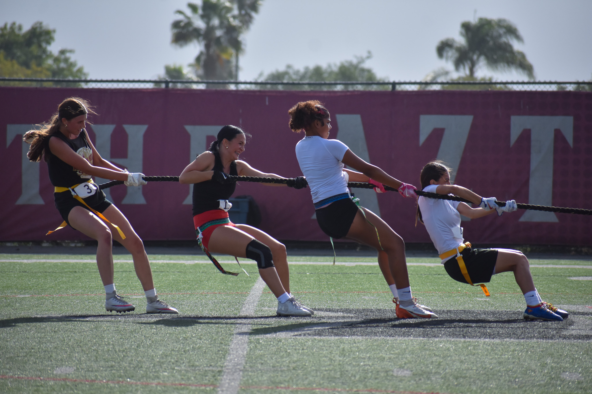

SPRING ‘24



MEDIA EXPERIMENTS
At this time I was not taking design classes but I still involved myself in activities that pushed for creative problem-solving. I just joined The Look fashion club on campus. I created a magazine spread for American Club Kids; a fashion style that was used as a political statement by the queer youth in the 80s. It was one of my first time collaborating with a team of writers, photographers and models to create a piece all would like.
I also began to pick up photography. The quick moments that usually flash by were hard but rewarding to capture. I would eventually take a class that would teach me the foundational camera skills but I did well considering I just began creating.